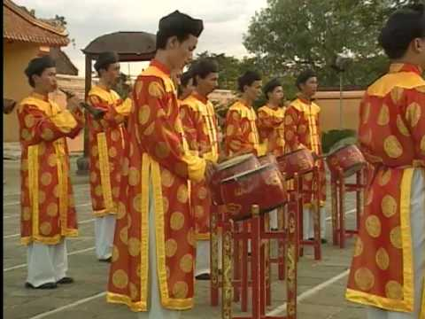

El Nha Nhac, literalmente “música elegante”, designa toda la gama de estilos de música y de danza que se interpretaban en la corte real vietnamita desde el siglo XV hasta la primera mitad del XX. Se solía tocar en la inauguración de las ceremonias de los aniversarios, fiestas religiosas, coronaciones, funerales y recepciones oficiales. De todos los géneros musicales que han surgido en Viet Nam, sólo el Nha Nhac puede preciarse de tener una dimensión nacional y fuertes lazos con las tradiciones de otros países de Asia del Sureste.
Las representaciones de Nha Nhac congregaban a un gran número de músicos, a veces acompañados de cantantes y bailarines, vestidos con suntuosos trajes. Las grandes orquestas, en las que predominaban los tambores, estaban formadas por numerosos tipos de instrumentos de percusión, así como por instrumentos de viento y de cuerdas. Todos estos músicos debían mantenerse muy concentrados, ya que se les exigía que siguieran minuciosamente cada etapa del ritual.
El Nha Nhac surgió en la época de la dinastía Le (1427-1788) y fue institucionalizado y codificado como música real por la dinastía Nguyen (1802-1945. Símbolo del poder y de la longevidad de la dinastía, el Nha Nhac se convirtió en un elemento fundamental de las numerosas ceremonias reales. Pero su función no se limitaba al acompañamiento musical de los fastos de la corte, sino que también permitía comunicarse con los dioses y los reyes y rendirles homenaje, además de propagar los conocimientos sobre la naturaleza y el universo.
Para resaltar...La música tradicional vietnamita se compone de una amplia variedad de géneros, el más típico y original de los cuales es la canción de tru cortes de origen norteño, el hat chau van, un género de música espiritual, el tono del Centro y el dan ca tai tu – música de aficionados del sur.

